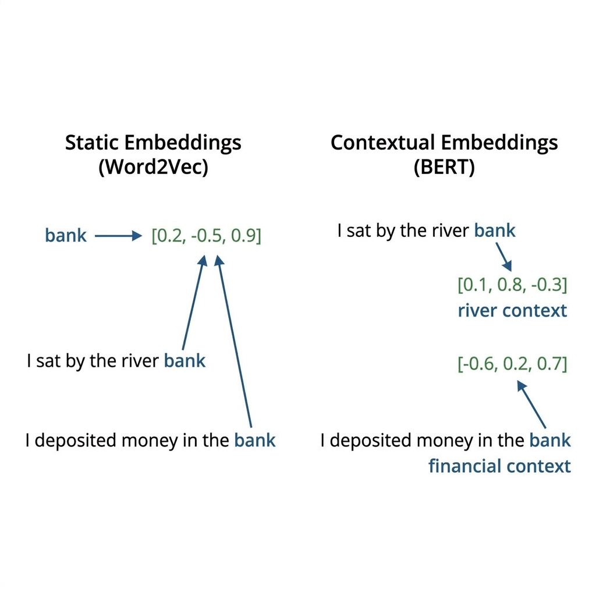
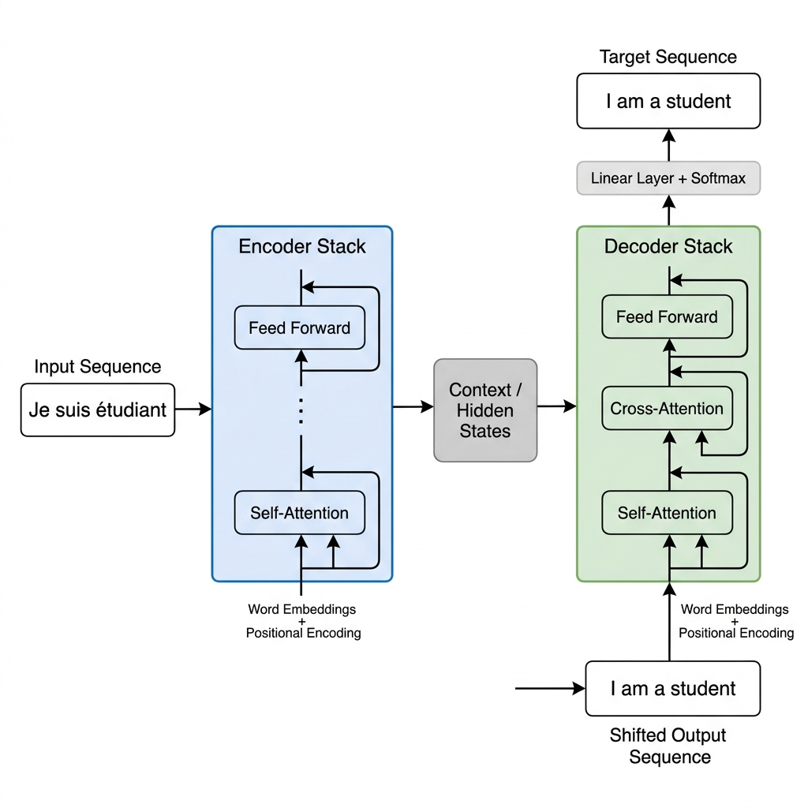
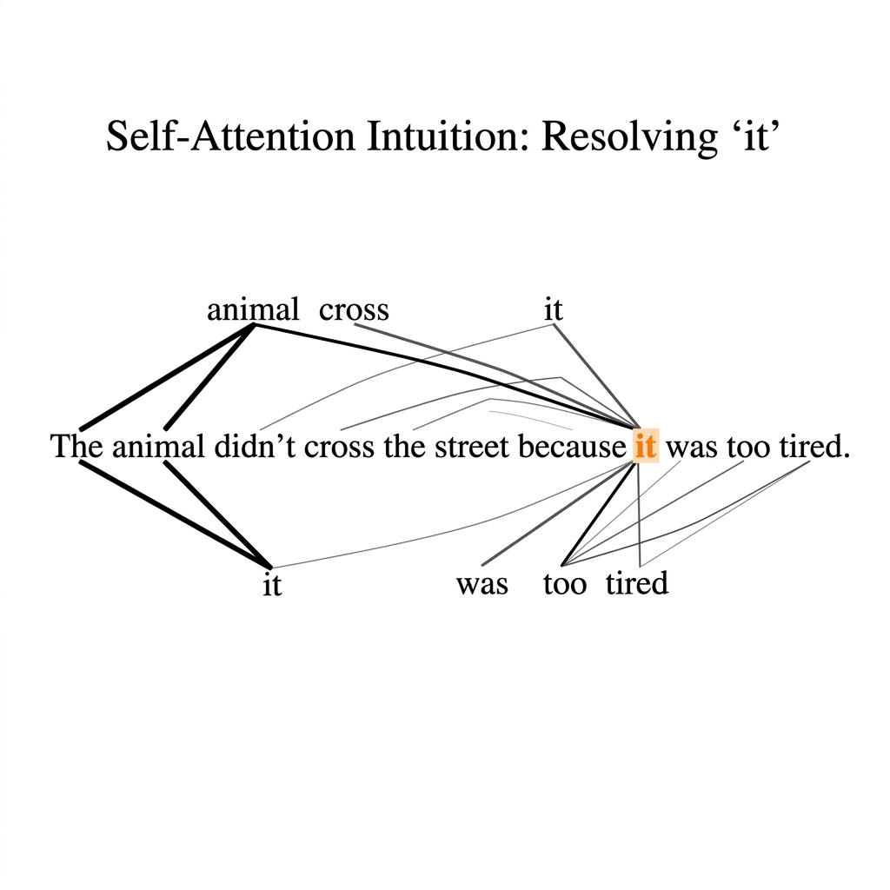
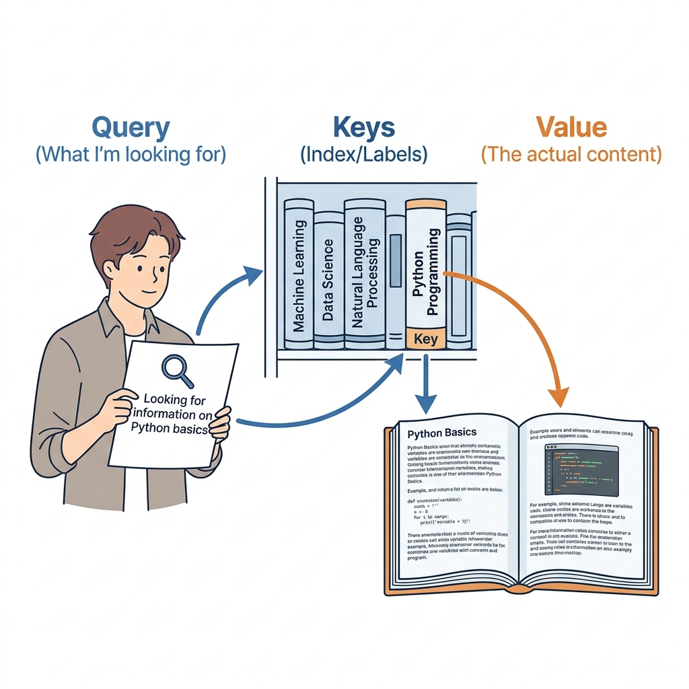
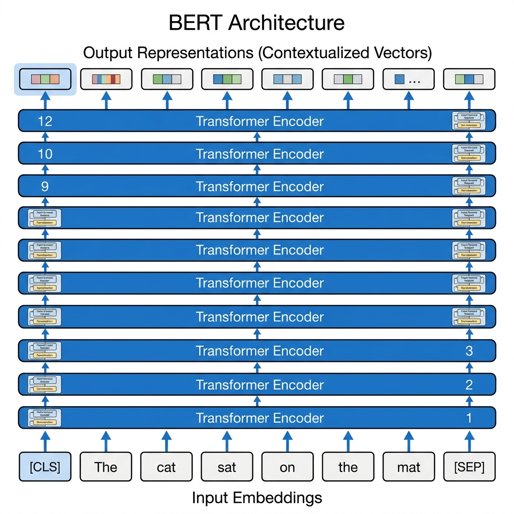
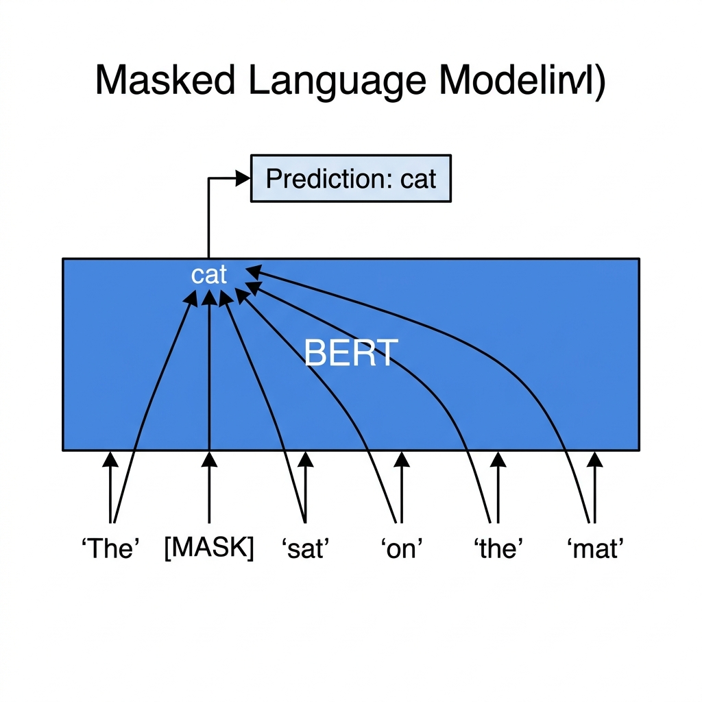
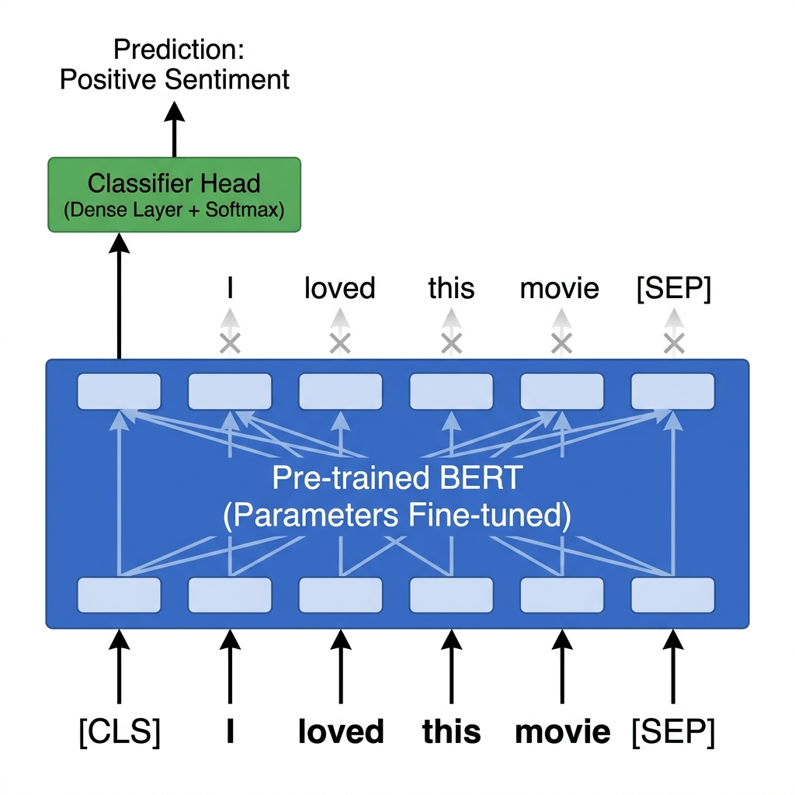
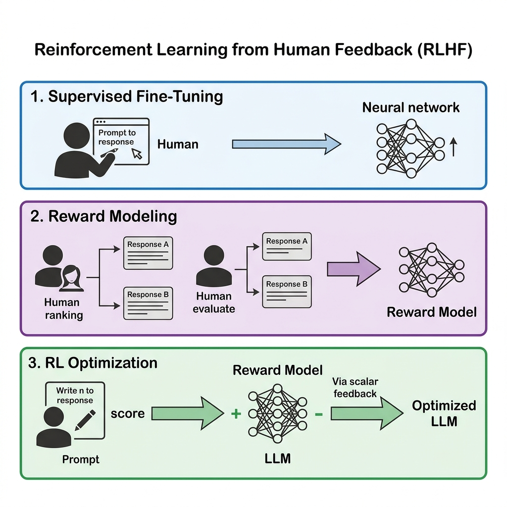

Tópicos A · 2026
From Transformers to LLMs
Contextual Models, BERT and Large Language Models
Thiago Medeiros
Universidade do Estado do Rio de Janeiro
Recap: Word Embeddings
1.1 — The Goal of Embeddings
Before deep learning, words were treated as discrete symbols (One-Hot Encoding). This led to sparse representations with no semantic meaning.
Dense Representations (Word2Vec)
Algorithms like Word2Vec and GloVe map words to dense vectors in a continuous space, capturing semantic relationships.
The Distributional Hypothesis
"You shall know a word by the company it keeps" (Firth, 1957). These models learn vector representations by predicting words based on their surrounding context.
Semantic Arithmetic
- Words with similar meanings are mapped close to each other in vector space.
- Relationships (like gender or geography) emerge as consistent directions.
- Drawback: The embedding matrix is static. Each word has exactly one vector.
1.2 — The Limitation: Static Embeddings
The critical flaw of static embeddings (Word2Vec, GloVe) is the inability to handle polysemy — words with multiple meanings.

The Problem
In Word2Vec, the word "bank" has exactly one vector representation, regardless of the sentence.
The vector is an average of all its meanings, which might not accurately represent any single meaning perfectly.
The Solution
We need Contextual Embeddings, where the vector for a word depends dynamically on the entire sentence surrounding it. Enter the Transformer.
The Transformer Architecture
2.1 — A Paradigm Shift
Before Transformers, NLP was dominated by Recurrent Neural Networks (RNNs) and LSTMs. They processed text sequentially.
Limitations of Recurrence
- Sequential Bottleneck: You can't process word $t$ until you've processed $t-1$. This limits parallelization on modern GPUs.
- Forgetting: Even LSTMs struggle to carry information across very long distances in a document.
The paper "Attention Is All You Need" (Vaswani et al., 2017) completely discarded recurrence in favor of Attention Mechanisms.
The Transformer Advantage
- Highly Parallelizable: Processes the entire sequence at once.
- Direct Connections: Any word can instantly "look" at any other word in the sequence, regardless of distance.
2.2 — Encoder-Decoder Architecture
The original Transformer was designed for Machine Translation, an Encoder-Decoder task.

How it works
- The Encoder: Takes the entire input sequence, processes it simultaneously, and creates a rich, contextualized representation (Hidden States) for every single word.
- The Context: A dense matrix containing the "understanding" of the input sentence.
- The Decoder: Generates the output sequence one token at a time, looking at both its own previous outputs and the Encoder's Context.
2.3 — Core Innovation: Self-Attention
The magic inside the Transformer is the Self-Attention Mechanism. It allows a word to dynamically update its meaning based on its neighbors.
The Cocktail Party Problem
Imagine you are at a noisy party. You focus your attention only on the person you are talking to, ignoring the background noise. Self-Attention does this for words.
- When processing the word "it", the model needs to know what "it" refers to.
- Self-attention assigns "weights" or "scores" to other words in the sentence.
- "it" pays strong attention to "animal" and updates its vector to include "animal" properties.

2.4 — Understanding Query, Key, Value
How does the model actually compute these "attention weights"? It uses an analogy from database searches: Query, Key, and Value (Q, K, V).

The Library Analogy
- Query (Q): What the current word is looking for. (e.g., "I am a pronoun, I'm looking for a noun.")
- Key (K): What other words advertise themselves as. (e.g., "I am a noun, I describe a living thing.")
- Value (V): The actual meaning/content of the word to be passed along if there is a match.
2.5 — The Self-Attention Calculation
To compute the final contextualized word vector, the model matches the Query against all Keys.
Step 1: Match (Similarity)
Take the Query vector of the current word and calculate the dot-product with all other Key vectors in the sentence.
High dot-product = Strong match (high attention).
Step 2: Aggregate (Values)
Turn those match scores into percentages (using Softmax). Then, multiply each percentage by the corresponding Value vector and sum them up.
The Result: A new vector that is a "blend" of the values of the words it paid attention to. The word "it" now contains a strong flavor of the "animal" vector. It is no longer static; it is contextual.
The BERT Model
3.1 — BERT Architecture
Introduced by Google (Devlin et al., 2018), BERT took the Encoder stack from the Transformer and scaled it up to create powerful contextual language models.

Encoder-Only Focus
- BERT discards the Decoder. It is purely designed for understanding text, not generating it.
- Bidirectional: Unlike generation models that process left-to-right, BERT's Self-Attention looks in both directions simultaneously.
- [CLS] Token: A special token added to the beginning of every sequence. Its final output vector is used as the aggregate representation of the entire sequence for classification tasks.
3.2 — Pre-training Strategy: MLM
How do we teach BERT language without labeled data? We use Self-Supervised Learning on massive text corpora (like Wikipedia). The primary task is Masked Language Modeling (MLM).
The "Fill-in-the-Blank" Task
Randomly mask out 15% of the words in a sentence and force the model to predict them using the surrounding context.
- Forces the model to deeply understand syntax, semantics, and world knowledge.
- Because it needs to predict the masked word, it must use information from both the left and the right.

3.3 — Pre-training Strategy: NSP
The second pre-training task is Next Sentence Prediction (NSP), designed to teach BERT the relationship between pairs of sentences.
Positive Example
Sentence A: "The man went to the store."
Sentence B: "He bought a gallon of milk."
Negative Example
Sentence A: "The man went to the store."
Sentence B: "Penguins live in Antarctica."
Why? Many NLP tasks (like Question Answering or Natural Language Inference) require understanding the relationship between two sequences. NSP gives BERT a foundational understanding of sentence coherence.
3.4 — The Transfer Learning Paradigm
BERT popularized the two-stage paradigm that dominates NLP today: Pre-train once, fine-tune everywhere.
Stage 1: Pre-training
- Train on massive unlabeled text (Wikipedia, BookCorpus).
- Tasks: MLM and NSP.
- Computationally expensive (requires thousands of GPUs for weeks).
- Result: A Foundation Model that understands language broadly.
Stage 2: Fine-Tuning
- Take the Pre-trained Foundation Model.
- Add a small, task-specific layer on top.
- Train on a specific supervised dataset (e.g., Sentiment Analysis).
- Fast and cheap (requires only a single GPU for a few hours).

Large Language Models (LLMs)
4.1 — From GPT to LLMs
While BERT focuses on understanding (Encoder), models like GPT focus on generation (Decoder). GPT's pre-training task is simple: predict the next word.
Scaling Laws
Researchers discovered that if you make the model bigger (more parameters), give it more data, and train it longer, performance improves predictably.
The Era of Massive Models
| Model | Year | Parameters |
|---|---|---|
| BERT-base | 2018 | 110 Million |
| GPT-2 | 2019 | 1.5 Billion |
| GPT-3 | 2020 | 175 Billion |
| GPT-4 | 2023 | ~1.7 Trillion (estimated) |
Emergent Abilities: At massive scales, models suddenly learned to do tasks they weren't explicitly trained for (math, logic, translation) just by predicting the next word.
4.2 — Prompting & In-Context Learning
With LLMs, we shift from fine-tuning the model weights to prompting the model with text.
Zero-Shot Prompting
"Classify the sentiment of this review:
'The food was terrible.'
Sentiment:"
The model completes the text with "Negative", despite never being explicitly fine-tuned for sentiment analysis.
Few-Shot Prompting
"Review: 'Great movie' -> Positive
Review: 'Boring' -> Negative
Review: 'It was okay' ->"
We show the model a few examples in the prompt itself. The model learns the pattern "in-context" without changing any of its internal weights.
4.3 — Alignment: Teaching LLMs to be Helpful
A raw LLM just predicts the next word. It might generate toxic text, lie, or refuse to answer. We must align it to human values using RLHF (Reinforcement Learning from Human Feedback).

How RLHF Works
- Step 1: Supervised Fine-Tuning. Humans write perfect answers to questions. The model learns the format of a "helpful assistant".
- Step 2: Reward Model. The model generates multiple answers. Humans rank which one is best. A second AI (the Reward Model) learns this human preference.
- Step 3: RL Optimization. The main LLM practices generating answers, and the Reward Model gives it a "score". The LLM adjusts itself to maximize the score.
4.4 — The Current Landscape
Major Players
| Company | Models | Status |
|---|---|---|
| OpenAI | GPT-3.5, GPT-4o | Closed Source |
| Anthropic | Claude 3 (Haiku, Sonnet, Opus) | Closed Source |
| Gemini 1.5 Pro / Flash | Closed Source | |
| Meta | LLaMA 2, LLaMA 3 | Open Weights |
| Mistral | Mistral 7B, Mixtral | Open Weights |
Open Problems
- Hallucinations: LLMs confidently state false information. They are designed to be persuasive, not factual.
- Context Length Limit: They can only process a limited amount of text at once (though this is rapidly increasing).
- Compute Cost: Training and running these models requires massive amounts of energy and expensive GPUs.